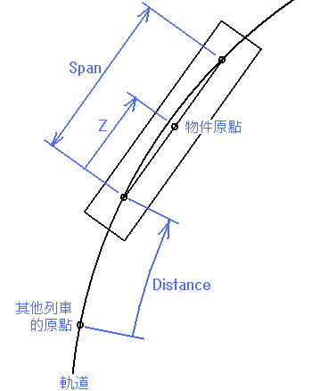

其他列車車組檔案
Train File
記述格式
以INI 格式作為基本記述格式。文字編碼為 UTF-8。
| BveTs Train 0.01 | 此首行文字必須記載檔案格式。 |
| [section1] | 宣告新部分。部分的名稱以「[ ]」括起。 |
| key1 = path1 | （已刪除文字之原文） |
| key2 = path2 | |
| ... | |
| ;comment | 以「;」（分號）作為該行文字的開端的話將會被無視。 |
| [section2] | 宣告另一個新部分。 |
| key3 = path3 | |
| ... |
部分
| 名稱 | 說明 |
| Structure | 設定物件 |
| Sound3d | 設定聲音 |
屬性
Structure 部分
設定物件。
| 名稱 | 說明 |
| Key | 物件名稱（即為物件列表檔案中定義的物件名稱） |
| Distance | 該其他列車原點與後方軌道交點（即轉向架中心點）之間的距離 |
| Span | 前、後方軌道交點之間的距離 |
| Z | 後方軌道交點與物件原點（中心點）之間的距離 |
前側和後側是相對於該其他列車行駛的方向。
該其他列車原點則可以定義於軌道上任意的地方。

Sound3d 部分
設定聲音。
| 名稱 | 說明 |
| Key | 聲音名稱（即為聲音列表檔案中定義的聲音名稱） |
| Distance1 | 該其他列車發出聲音時聲音源點對比本列車向後的極限 |
| Distance2 | 該其他列車發出聲音時聲音源點對比本列車向前的極限 |
| Function | 聲音類型 (Run: 行走聲 | Accelerate: 加速聲 | Decelerate: 減速聲) |
前側和後側是相對於該其他列車行駛的方向。
你只能設定其他列車各一個 Function = Accelerate 與 Function = Decelerate 的聲音。而 Function = Run 的聲音則可設定一個以上。
行走聲的音量與頻率乃參考該其他列車的行駛速度（0 至 90 km/h 之間以 0 至 1 倍作變化）。
© 2012 mackoy